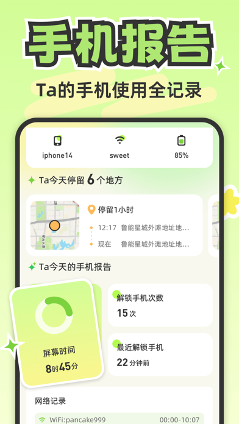

Lookus 用了半年才发现的 4 个隐藏设置，90% 的情侣都没开过
大多数人把 Lookus 当普通的实时定位工具用，其实它藏着好几个能大幅改善体验的冷配置——地点围栏的时段屏蔽、紧急通知的静音突破、安卓厂商白名单路径、还有地理围栏的半径与停留时间调优。这篇把这些"官方文档没写全"的功能挖出来。
我用 Lookus 快一年了，坦白说前八个月都把它当成一个"能看对方在哪"的普通工具——从官网装上去、授权、开定位，完事。直到有天跟伴侣在商场逛，她隔五分钟就收到一次"到达某地点"的通知，烦得直接关掉了所有推送。我们才开始翻设置，翻着翻着发现，这东西藏得真深。
下面四个功能，我敢说 90% 的情侣用户都没完整配过。
隐藏功能一：地点围栏的活跃时段——不是所有时候都要被通知
Lookus 的"地点"功能大部分人都在用——家、公司、健身房，各画一个圈，对方进出就弹通知。但几乎没人注意到，每个地点都能单独设置活跃时段。
我之前以为这个功能就是"开关"，直到在公司地点的设置里发现了一个"仅在以下时段发送通知"的选项。点开之后可以精确到星期和时间段——比如公司只在工作日 9:00 到 20:00 触发，周末哪怕对方去公司加班也不会给我发通知；家的话可以反过来，只在非工作时段触发。
这解决了我们当初的核心痛点：之前伴侣加班到深夜，我在家等得着急；但周末她偶尔回公司取东西，我收到"到达公司"的推送反而瞎担心。时段设置一开，两条场景自动分流，谁也不打扰谁。
设置路径：地点 → 选中某个地点 → 通知设置 → 活跃时段。藏得真深，默认是"全天"，改完就回不到默认了——这应该是 Lookus 故意设计的，让你自己手动发现。
隐藏功能二：紧急联系突破静音——但真的要慎用
这个功能我只在一次深夜找不到伴侣的时候用过，效果震撼，但我不希望再有第二次。
常规的定位 app 紧急通知跟普通消息一样，受手机系统的静音、勿扰模式控制。你发紧急联系，对方正在开会或睡觉，一条都收不到。Lookus 走的不是这个路数——它申请了操作系统的高优先级通知权限，配合悬浮窗，哪怕对方开了静音或勿扰，铃声一样响、弹窗一样弹。
官方没有大张旗鼓宣传这个功能，我猜是怕被滥用。素材文档里专门写了一句伦理提示："如果情侣之间紧急联系用得比电话还多，那不是工具的问题，是沟通方式需要调整。"我深以为然——这功能就该留给出车祸、手机丢了、真找不到人的时候用，别拿它当"你在哪赶紧回消息"的升级版。
设置路径：设置 → 紧急联系 → 启用高优先级通知。iOS 和安卓都要开对应的权限（iOS 叫"重要通知"，安卓叫"悬浮窗"），双向都得配。
隐藏功能三：安卓后台白名单——不同厂商路径完全不一样
这是 Lookus 用户吐槽最多的功能，但也是最考验耐心的。问题出在安卓厂商的电池优化策略——锁屏后几分钟就把后台 app 杀掉，定位停在原地不动。
Lookus 的文档里确实提到了"电池优化白名单"，但只写了个大方向。后来翻了lookus文档才发现厂商路径这块文档没写全，真正动手配的时候我才体会到每家厂商的设置路径完全不同：
| 厂商 | 路径 |
|---|---|
| 华为/荣耀 | 应用和服务 → 应用启动管理 → Lookus → 手动管理 → 打开所有开关 |
| 小米/红米 | 应用设置 → 省电策略 → Lookus → 无限制 |
| OPPO/vivo | 电池 → 后台高耗电保护 → Lookus → 允许后台运行 |
| 三星 | 电池和设备维护 → 后台限制 → Lookus → 从不休眠 |
我用的是华为，伴侣用的是小米，两个人对着各走各的路径，折腾了十几分钟才都配好。如果你的定位经常"飘"或者锁屏后就停了，先确认一下是不是从lookus下载拿的最新版，旧版可能有后台保活的 bug；没问题的话就把这张表对着自己的手机厂商走一遍——90% 的情况是后台没保住。
iOS 用户基本不用操心这个，系统对后台 app 友好得多，只要把"位置信息"设成"始终允许"、打开"后台 App 刷新"就够了。

隐藏功能四：地理围栏的半径与停留时间——调不准就是误通知机器
配好活跃时段之后，我继续深挖，发现 Lookus 的地点围栏还有两个可调参数：围栏半径和停留触发时间。默认值是 50 米和 3 分钟，但不同场景应该配不同。
之前我们把"健身房"的半径设成了 60 米，结果伴侣只是路过健身房门口（骑共享单车经过），就收到了一条"到达健身房"的推送。把半径调到 25 米，停留时间从 3 分钟改成 5 分钟之后，误触发就消失了——必须真的进健身房、真的待够五分钟才通知。
素材文档里给了一个参考表，我整理一下：
- 小区/公寓：50-80 米，覆盖单元门到停车场
- 公司办公楼：30-50 米，精确到楼栋入口
- 健身房/小商铺：20-30 米，避免路过误触发
- 商场/商圈：80-100 米，逛店期间不重复通知
这个功能没什么设置门槛，但就是没人会去调——大家都停在"能用就行"的阶段。花 10 分钟把四个常去地点调一遍，体验直接上一个台阶。
一个忠告：别把它当监控
写这篇的时候最深的感受是——这些隐藏功能都是为了"让双方都舒服"而设计的，不是为了"抓出轨"。活跃时段是减少打扰，半径调小是避免误判，紧急联系突破静音是真着急的时候用。
如果你装 Lookus 是为了"看看她是不是真的在加班"，那再好的设置也帮不了你。反过来，如果是为了"她加班到几点我好去接她""她出门旅游我知道她安全到了"，那这些功能才是真正有用的。
我的建议是，看完这篇之后花 20 分钟，把自己和伴侣两边的设置都对着过一遍。官网的入门教程只告诉你怎么装、怎么授权，这些进阶设置得自己挖。进每个菜单翻一遍，总能发现点什么。怕链接失效或想自己动手调的话，备份在三个仓库上各一份：GitHub、Gitee、GitCode。